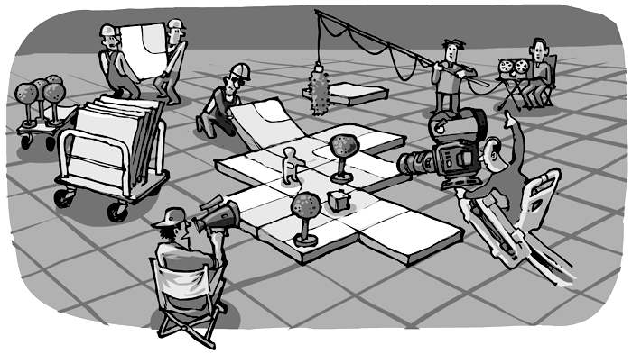
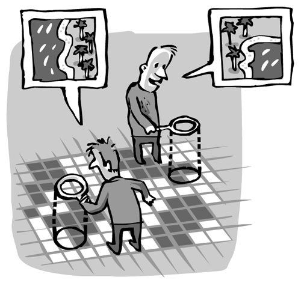

Your game is getting more complex and you don't want the action to be limited to a screen-sized area. You want to move your avatar around on a huge map – yet, you want it to stay on the screen, and have the background move around instead.
The map class is here to help you do just that.
The map is constructed of many tiles (sprites) that are layed out in a certain order. Somehow, you need to tell Instant Rocket Fuel which tile goes where. There is no map editor included to do so; instead, you create an image.
Imagine, every pixel in the image represented a tile from your sprite:
# first create a Sprite
# with all the images you need to show on the map
tipperary = new Sprite
"texture": "images/tipperary.png"
"width": 100
"height": 100
"key":
"aa": 0
"bb": 1
"cc": 2
"dd": 3
# ...
# then create the Map with a mapfile,
# a pattern (how to interprete the mapfile)
# and the sprite from above
@alongway = new Map
"mapfile": "assets/a_long_way.png"
"pattern": "simple"
"sprite": tipperary
When you have your map all set up like this, you just call
render: (ctx) ->
@alongway.render(ctx)
So, your map needs a sprite and a mapfile, which is an image. But what does "pattern": "simple" mean?
"pattern" refers to the way, Instant Rocket Fuel interprets you mapfile.
Three patterns are built-in, but you can also define your own map-interpretation-function and pass it to the map, if you like.
Simple means, the red channel of your mapfile is interpreted, literally mapping one pixel to one tile. In the above example, a red-value of hex "aa" maps to the first image (index 0) of your Sprite, "bb" maps to the second image and so on.
This approach can be tedious in some cases. Lets say, your game has a map of the carribean sea: Blue Water and small islands. Really all you need is two tiles, one for the sea and one for the land. But this way, the coastline will allways be an ugly straight line.
You could provide 16 different tiles covering all possible costlines – assuming the corner of every individual tile can be either land or sea.
Now, the map has a square pattern, that will look at the space between the pixels and choose the tile depending on the combination of the four adjacent pixels.
This way, you can provide a two color mapfile – which is much easier to draw – and still generate the correct map from your 16-tile Sprite.
The third patter cross comes into play, when the information in your map consists of walls: crosses and T-shapes. Like in a maze. Again, it allows you to draw your map file with just one color, but will choose from a larger number of tiles.
To be honest, the above example is not complete: Your map is huge, and the visible window to display it is small. That was the whole idea of using a map in the first place! Somehow, you need to tell the map which part to show. In other words, position the viewport.
That why you need a camera. Add this to your scenes constructor:
@camera = new Camera
"projection": "normal"
"vpWidth": @parent.width
"vpHeight": @parent.height
@camera.coor = new Vector(1000,1000)
When the time comes to render your map, you say:
render: (ctx) ->
@camera.apply ctx, =>
@background.render(ctx, @camera)
The camera practially takes the whole contents of your render function as a parameter.
The camera serves many purposes: it defines which part of the map should be visible, moving the Tiles into the appropriate places.
It can also, by way of optimisation, choose not to call render on the tiles that wouldn't be visible on the screen anyway.
Finally, it can rotate and scale everything before rendering it. So far, it supports "normal" and "iso" projections.